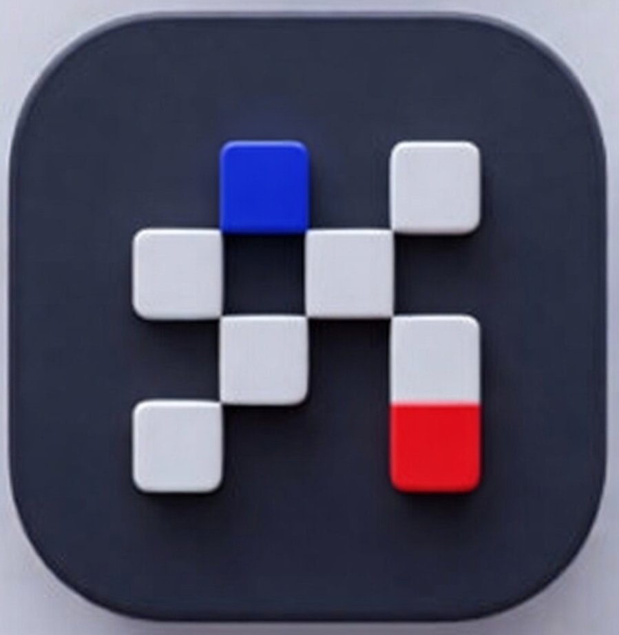

โยนไฟล์
วางเอกสารลงโฟลเดอร์ knowledge/ ซ้อนโฟลเดอร์ย่อยได้
คู่มือปฏิบัติ · ภาษาไทย · Axiom Design Core · Editorial
DIY RAG / Chatbot-as-a-Self-Service
สำหรับคนที่ไม่เขียนโค้ด แต่ชี้ URL ได้ สมัครบัญชีได้ และวางข้อความภาษาคนลงในเอเจนต์ได้


01 / การใช้
ชุดนี้ถอดบทเรียนจากระบบที่วิ่งอยู่ที่ rag.nonarkara.org ไม่ใช่ทฤษฎีจากบล็อก และไม่ใช่ผลิตภัณฑ์ทางการของ depa หรือ LINE
คนกำลังอ่านและคิด — เซอริฟได้ สีเทา + จุดแดงหนึ่งจุด
บอทที่พูดว่า “ไม่ทราบ” มีประโยชน์กว่าบอทที่แต่งเรื่อง
02 / แผนที่
03 / หลัก
สำหรับการค้นความรู้ของหน่วยงาน ลำดับที่ถูกคือสั้น ถูก ตรวจสอบได้
LINE → ค้นเอกสาร → โมเดลสรุป → ตอบ
เอเจนต์ → เครื่องมือหลายชิ้น → ท่องเน็ต → ฐานข้อมูล → แล้วค่อยตอบ
แบบแรกถูกกว่า เร็วกว่า คาดเดาได้ และเอามาอธิบายกับผู้บริหารได้ เครื่องมือจองคิว รับเรื่องร้องเรียน ออกเอกสาร ค่อยต่อเมื่อสมองนิ่งแล้ว
04 / ผลลัพธ์
สมอง
PDF, Word, Excel, PowerPoint, ข้อความ, มาร์กดาวน์ — โยนเข้า knowledge/ ระบบอ่านเอง
ปาก
ลูกค้าทักมาได้ 24 ชั่วโมง คำตอบมาจากไฟล์ของคุณ ไม่จากความรู้ทั่วไปของโมเดล
รั้ว
ถ้าเอกสารไม่มี บอทพูดว่าไม่มี และบอกว่าจะติดต่อคนได้อย่างไร
ทางเลือกสมอง
Gemma 4 e2b/e4b, DeepSeek บนแรม 8–16 GB — หรือ Groq / Gemini ที่สมัครฟรีได้
หน้าควบคุม
ไฟล์ที่อ่านแล้ว จำนวนชิ้นข้อความ การเชื่อม LINE การเชื่อมโมเดล คำถามล่าสุด
ข้อแม้
บอทอยู่ที่โน้ตบุ๊กหรือมินิพีซีของคุณ ปิดเครื่อง = บอทตาย นี่ไม่ใช่คลาวด์เช่า
05 / ขอบเขต
| ไม่ใช่ | เพราะอะไร | ถ้าต้องการ |
|---|---|---|
| แชตบอทรู้ทุกเรื่องแบบ ChatGPT | ความรู้ทั่วไปทำให้หน่วยงานโดนคำตอบปลอม | ใช้ ChatGPT โดยตรง — อย่าต่อกับ LINE OA ขององค์กร |
| Dify / Botpress / ManyChat | ทางสั้นสำหรับต้นแบบ แต่โฟลเดอร์ไม่ใช่สมองอีกต่อไป | ใช้ได้ถ้ายอมให้ความรู้ไปอยู่บนบริการคนอื่น |
| ฐานข้อมูล PostgreSQL / Pinecone | คุณต้องเป็นแอดมินระบบ ชุดนี้เลี่ยงงานนั้น | SQLite ไฟล์เดียวข้างโฟลเดอร์ความรู้ |
| เอเจนต์ที่จองคิวและออกเอกสารเอง | ยังไม่มีหลักฐานจากไฟล์ก็ลงมือไม่ได้ | ต่อเครื่องมือทีหลัง เมื่อการปฏิเสธทำงานแล้ว |
| ผลิตภัณฑ์ทางการของ depa / LINE | นี่คือชุดสอนของดร.นน และ Axiom X | อย่าใส่ตราสัญลักษณ์ราชการบนบอทโดยไม่ได้รับอนุญาต |
06 / โครง
07 / งานมือคน
วางเอกสารลงโฟลเดอร์ knowledge/ ซ้อนโฟลเดอร์ย่อยได้
สมัครที่ manager.line.biz แล้วเปิด Messaging API จากหน้าบัญชี — ไม่สร้างชาแนลเองใน Developers Console
Channel Secret และ Channel Access Token ใส่ในไฟล์ .env ห้ามวางในโค้ด
Ollama ในเครื่อง หรือคีย์ Groq / Gemini / OpenAI / Anthropic
โปรแกรมตรวจของ ทำดัชนี เปิดเซิร์ฟเวอร์ เฝ้าโฟลเดอร์ แสดงสถานะ
ห้าอย่างนี้คือทั้งหมดที่เจ้าของบอทต้องทำด้วยมือ ถ้ามีขั้นที่หก แปลว่าคู่มือนี้พัง
08 / อุปกรณ์
| ของ | ทำไมต้องมี | ได้จากไหน |
|---|---|---|
| คอมพิวเตอร์ที่เปิดค้างได้ | บอทอยู่ที่นี่ ไม่ได้อยู่บนคลาวด์เช่า | แม็ค มินิพีซี หรือวินโดวส์ที่เปิดทั้งคืนได้ |
| Python 3.11 ขึ้นไป | ชุดนี้เป็นโปรแกรมไพธอน | python.org/downloads — ติ๊ก Add to PATH |
| Ollama | ฝังความหมายของเอกสารในเครื่อง และเป็นสมองสำรอง | ollama.com/download |
| บัญชี LINE และ Business ID | สร้าง Official Account ไม่ได้ถ้าไม่มี | account.line.biz |
| cloudflared | ให้ LINE ยิง HTTPS มาถึง localhost โดยไม่เปิดพอร์ทเราเตอร์ | ติดตั้ง cloudflared |
| เอเจนต์เขียนโค้ด (ถ้าจะให้สร้างเครื่อง) | Claude Code / Cursor / ตัวอื่น — สร้างเครื่อง ไม่ได้เป็นเครื่อง | วางไฟล์ PROMPT.md ในโฟลเดอร์ว่าง |
09 / ขั้นที่ 1
MyLineBot/ ├── knowledge/ ← สมอง │ ├── คู่มือพนักงาน.pdf │ ├── ระเบียบ.docx │ ├── ราคา.xlsx │ └── โครงการ/ │ └── รายงาน.pdf ├── rag_database/ ← เครื่องทำเอง อย่าแก้ ├── .env ← คีย์ อย่าแชร์ └── START.command
ซ้อนโฟลเดอร์ย่อยได้ โปรแกรมเดินลงไปทั้งหมด อย่าวางรหัสผ่าน เลขบัญชี หรือสัญญา NDA ถ้าเครื่องไม่ได้เข้ารหัสดิสก์
10 / ขั้นที่ 1 ต่อ
นี่คือจุดที่ทำให้คนทั่วไปใช้ได้ ไม่ใช่โปรแกรมเมอร์
รองรับ
โมเดลฝังความหมาย
วัดแล้ว: nomic-embed-text คะแนนเรื่องตรงกับเรื่องมั่วทับกัน — ตั้งเกณฑ์ปฏิเสธไม่ได้
เกณฑ์หลักฐานที่วัดแล้ว
เรื่องตรง 0.50–0.61 · เรื่องมั่ว ≤ 0.42 · เปลี่ยนโมเดลฝัง = ต้องวัดใหม่ทั้งคลัง
11 / ขั้นที่ 2
แหล่งที่มา: คู่มือ Messaging API ของ LINE ระบุชัดว่าต้องมี OA ก่อน แล้วค่อยเปิด Messaging API ให้ OA นั้น
เลือก Provider ดี ๆ ตอนเปิด API เพราะย้ายชาแนลข้าม Provider ทีหลังไม่ได้ และ User ID ของผู้ใช้จะคนละชุดถ้าคนละ Provider
12 / ขั้นที่ 2 ต่อ
สองเว็บ คนละหน้าที่
OA Manager = หน้าตาบัญชี ทักทาย เมนูรูป ปิดตอบอัตโนมัติ
Developers Console = คีย์, webhook, สวิตช์ Use webhook
13 / ขั้นที่ 2 ต่อ
| ค่า | ทำอะไร | หยิบที่ไหน |
|---|---|---|
| LINE_CHANNEL_SECRET | พิสูจน์ว่าเว็บฮุคมาจาก LINE จริง ด้วยลายเซ็น HMAC-SHA256 ที่หัวข้อ x-line-signature | Console → ชาแนล → Basic settings → Channel secret |
| LINE_CHANNEL_ACCESS_TOKEN | ให้เครื่องคุณเรียก Messaging API เพื่อส่งข้อความกลับ | แท็บ Messaging API → Issue (ใช้แบบกำหนดวันหมดอายุได้ ดีกว่าแบบไม่มีวันหมด) |
14 / ขั้นที่ 2 ต่อ
ค่าเริ่มต้นตอนสร้างชาแนลคือเปิดทั้งคู่ คนใช้จะได้คำตอบซ้ำสองรอบ — จากเมนูสำเร็จรูป และจากบอทคุณ
ทักทายตอนเพิ่มเพื่อนให้บอทเป็นคนส่งเองจากเหตุการณ์ follow จะได้ข้อความเดียว ภาษาเดียว ไม่ชนกัน
Reply ฟรีไม่จำกัด
ข้อความตอบกลับในแชตไม่นับโควตาที่ต้องจ่าย ของที่นับคือ Push / Multicast / Broadcast ต่อผู้รับ
แปลว่าอะไรในทางธุรกิจ
ผู้ตอบ 24 ชั่วโมงไม่เสียค่าไลน์ งบอยู่ที่โฆษณาที่คุณเลือกยิงเอง
QR เพิ่มเพื่อน
แท็บ Messaging API ใน Console มีคิวอาร์โค้ดของ OA สแกนด้วยมือถือตัวเองเพื่อทดสอบ
15 / ขั้นที่ 3
ในเครื่อง · ข้อความไม่ออกจากบ้าน
เหมาะกับข้อมูลภายใน ระเบียบบริษัท เรื่องที่กฎหมายห้ามส่งให้คลาวด์
ราคา: ไฟฟ้าและแรม คำตอบบนแม็ค 16 GB อุ่นเครื่องแล้วประมาณไม่กี่วินาที — ถ้าโดนโมเดลอื่นไล่ออกจากแรม อาจเป็นนาที
คลาวด์ · เร็ว ฟรีมีเพดาน
คำถามและชิ้นเอกสารที่ค้นได้จะถูกส่งออกจากเครื่อง ตัวคลังไฟล์ทั้งก้อนไม่ถูกอัปโหลด
ต้องบอกคนใช้ใน /privacy ว่าส่งไปผู้ให้บริการใด ชุดจริงใช้โซ่สำรองเพราะโควตาฟรีหมดระหว่างวัน
ไม่ว่าจะตอบด้วยใคร การค้นหาต้องอยู่ในเครื่อง ด้วย bge-m3 นี่คือจุดที่ทำให้บอทไม่แต่งเรื่องจากความรู้โลก
16 / ขั้นที่ 3 ต่อ
| คำสั่ง Ollama | แรมที่สบาย | ใช้เมื่อ |
|---|---|---|
| ollama pull gemma4:e2b | 8 GB | โน้ตบุ๊กเล็ก ทดสอบให้ขึ้นก่อน คุณภาพพอสำหรับคำถามสั้น |
| ollama pull gemma4:e4b | 16 GB | ค่าเริ่มต้นที่แนะนำ แท็ก gemma4 ไม่ระบุรุ่นจะได้ตัวนี้ |
| ollama pull deepseek-r1:8b | 16 GB | อยากให้คิดก่อนตอบ — ต้องเผื่อโทเคนคิด ไม่งั้นได้คำตอบว่าง |
| ollama pull bge-m3 | ~1 GB เพิ่ม | บังคับ สำหรับการค้น อย่าใช้ nomic-embed-text ถ้าคลังมีไทย |
17 / ขั้นที่ 3 ต่อ
| ผู้ให้บริการ | สมัคร | หมายเหตุที่ต้องรู้ |
|---|---|---|
| Groq | console.groq.com/keys | ไม่ต้องบัตร โชว์คีย์ครั้งเดียว รุ่นเช่น openai/gpt-oss-20b เร็วมาก เพดานต่อนาทีหมดได้ระหว่างวัน — อย่าใช้ตัวเดียวเป็นแผนผลิต |
| Google Gemini | aistudio.google.com/app/apikey | คีย์ใหม่เป็น Auth key ชั้นฟรีมีโควตา บางรุ่นข้อมูลถูกใช้พัฒนาผลิตภัณฑ์ของกูเกิล — อ่านหน้าแผน |
| OpenRouter | openrouter.ai/keys | บางรุ่นติด :free ได้โดยไม่ใส่บัตร รายการเปลี่ยนเร็ว ตรวจหน้าโมเดลก่อนล็อกชื่อ |
| OpenAI | platform.openai.com/api-keys | มีค่าใช้จ่าย ใส่บัตร อย่าลืมเพดานงบ |
| Anthropic | console.anthropic.com | มีค่าใช้จ่าย คุณภาพสูง เหมาะกับคำตอบยาวจากนโยบาย |
18 / ขั้นที่ 4
LINE_CHANNEL_SECRET=xxxxxxxx LINE_CHANNEL_ACCESS_TOKEN=xxxxxxxx ANSWER_PROVIDER=auto GROQ_API_KEY=xxxxxxxx OLLAMA_CHAT_MODEL=gemma4:e4b OLLAMA_EMBED_MODEL=bge-m3 BOT_NAME=บอทความรู้หน่วยงาน BOT_LANGUAGE=th KNOWLEDGE_FOLDER=./knowledge RAG_MIN_SCORE=0.46
START จะคัดลอก .env.example ให้ถ้ายังไม่มีไฟล์นี้ ไฟล์ .env อยู่ใน .gitignore อยู่แล้ว — อย่าบังคับแอดมันเข้ากิต
19 / ขั้นที่ 5
localhost:8000 LINE ยิงไม่ถึง ต้องมีที่อยู่ https://…/webhook
ทดสอบเร็ว — ไม่ต้องมีโดเมน ไม่ต้องมีบัญชี Cloudflare
cloudflared tunnel --url http://127.0.0.1:8000
จะได้ที่อยู่สุ่มบน trycloudflare.com Cloudflare ระบุว่า Quick Tunnel สำหรับพัฒนา ไม่ใช่ผลิต ใช้ 127.0.0.1 ห้ามพิมพ์ localhost — cloudflared ชอบ IPv6 แล้วเครื่องคุณฟัง IPv4
20 / ขั้นที่ 5 ต่อ
นี่ไม่ใช่ข้อบกพร่องของโปรแกรม นี่คือสถาปัตยกรรม
ทดสอบ
ประจำ
ยังเป็นการเชื่อมออก ไม่ต้องตั้งเราเตอร์
อย่า
21 / ขั้นที่ 6
LINE อาจส่งเหตุการณ์เดิมซ้ำ ใช้ webhookEventId กันของซ้ำ เปิด Webhook redelivery ได้ในแท็บเดียวกัน
22 / ขั้นที่ 7
1
สวัสดิการค่ารักษาครอบคลุมพ่อแม่หรือไม่
2
ฝังคำถาม เทียบทั้งคลัง รวมกับคำตรงตัว
3
คู่มือพนักงาน.pdf หน้า 42 · สวัสดิการ-2569.pdf หน้า 17
4
ตอบจากชิ้นเหล่านี้เท่านั้น ภาษาเดียวกับคำถาม
5
ข้อความธรรมดา ไม่มี **มาร์กดาวน์** มีแหล่งและคำเตือน AI
อย่าให้โมเดลเดาภาษา — ดูสคริปต์ไทยในโค้ด แล้วบังคับในพรอมต์ โมเดลเล็กที่ถูกบอกว่า “ตอบภาษาเดียวกับคำถาม” ตอบอังกฤษเป็นไทยราวหนึ่งในสามครั้ง
23 / รั้ว
| ประตู | ราคา | กันอะไร |
|---|---|---|
| รูปแบบการโจมตี (jailbreak, ขโมยพรอมต์) | ฟรี ไม่เรียกโมเดล | คนที่พยายามดึงระบบออกนอกเอกสาร |
| เกณฑ์การค้น minScore 0.46 หรือคำตรงตัวที่หายาก | ฟรี ไม่เรียกโมเดล | คำถามที่คลังตอบไม่ได้ |
| พรอมต์บังคับให้ตอบจากชิ้นที่ส่งไป | หนึ่งครั้งต่อคำถาม | การแต่งรายละเอียดที่ไม่มีในหน้า |
| โมเดลตอบว่าไม่ทราบ → ถือว่าปฏิเสธ | ฟรี | การคิดเงินคำตอบที่ไม่มีสาระ |
24 / ความชอบธรรม
เปิดเผย
บอกว่าผู้ตอบเป็นโปรแกรม ก่อนคนใช้พิมพ์คำถามแรก
ความเป็นส่วนตัว
เก็บอะไร นานเท่าไหร่ ส่งให้ผู้ให้บริการคลาวด์รายใด ถ้าส่ง
ลบ
ลบข้อมูลของผู้ใช้คนนั้นทันที ไม่ต้องเปิดตั๋ว ไม่ต้องรอแอดมิน
คำเตือน AI
「คำตอบนี้สร้างโดย AI จากเอกสาร อาจมีข้อผิดพลาด」
ส่งต่อคน
ทุกการปฏิเสธต้องมีทางไปต่อ ชื่อคน ช่องทาง ห้ามจบที่ “ไม่มีข้อมูล”
โฆษณา
/subscribe ถึงจะอยู่ในรายชื่อ /stop ออกทันที ห้ามยิงจากแค่การทัก
25 / Claude Code และตัวอื่น
วาง PROMPT.md ในโฟลเดอร์ว่าง แล้วบอกเอเจนต์ว่าอ่านไฟล์นั้นแล้วทำให้ครบ
ข้อบังคับที่ต้องอยู่ในพรอมต์: ตรวจลายเซ็นไลน์, ปฏิเสธเมื่อไม่มีหลักฐาน, ฝังด้วย bge-m3, จำแฮชไฟล์, คีย์อยู่ใน .env, มี START.command และ START.bat, มีหน้าแอดมิน, มีเทสอัตโนมัติ, คำตอบไลน์เป็นข้อความธรรมดา
อย่าให้เอเจนต์ติดตั้ง LangChain หรือ LlamaIndex โดยไม่ถูกถาม ของพวกนั้นซ่อนรั้วที่คุณต้องเห็น
ทาง A
ทาง B
อย่าทำ
26 / จาก rag.nonarkara.org
| ที่เจอ | ที่ทำ |
|---|---|
| ค้นเฉพาะเวกเตอร์พลาดชื่อเฉพาะ เช่น Honiara | ค้นลูกผสม: ความหมาย + คำตรงตัว (ไทยใช้ไตรแกรม เพราะไม่มีวรรค) |
| ชิ้นภาษาไทยถูกตัดกลางคำ | ตัดตามย่อหน้าและเครื่องหมายจบประโยค ไม่ใช่ตามช่องว่าง |
| โมเดลเล็กเป็นเกตหัวข้อแล้วปฏิเสธคำถามถูก | เอาออก เหลือเกณฑ์การค้น |
| โทเคนตอบกลับไลน์หมดก่อนแร็กตอบ | Push ทุกคำตอบที่ใช้โมเดล Reply ได้เฉพาะข้อความทันที เช่น /privacy |
| ไลน์เงียบเมื่อโปรแกรมพัง | จับข้อผิดพลาดแล้วส่งคำขอโทษสองภาษาทุกครั้ง ห้ามเงียบ |
| **ตัวหนา** โผล่ในแชตเพราะไลน์ไม่เรนเดอร์มาร์กดาวน์ | ถอดมาร์กดาวน์ก่อนส่ง |
27 / ซ่อม
| อาการ | ดูที่ |
|---|---|
| Verify webhook ไม่ผ่าน | อุโมงค์ชี้ 127.0.0.1 ไม่ใช่ localhost · โปรแกรมเปิดอยู่ · URL มี /webhook |
| ทักแล้วเงียบ | Use webhook เปิดหรือยัง · ทักทายอัตโนมัติชนหรือไม่ · ลายเซ็นผิดได้ 401 |
| ตอบช้าเป็นนาที | โมเดลโดนไล่จากแรม · ดู ollama ps · อย่ารัน Gemma สองขนาดพร้อมกัน |
| ตอบมั่ว / ตอบเรื่องนอกเอกสาร | minScore ต่ำเกินไป หรือยังไม่ได้ใช้ bge-m3 |
| ปฏิเสธทั้งที่ไฟล์มีคำตอบ | PDF ไม่มีชั้นข้อความ · หน้าเว็บถูกเก็บเป็นเมนูลิงก์ · ชิ้นไทยถูกตัดครึ่ง |
| บอทตายทั้งวัน | เครื่องหลับ · ฝาแม็คปิด · Quick Tunnel ถูกสร้างใหม่แล้ว URL เก่าตาย |
28 / ซื่อสัตย์
ความซื่อตรงเรื่องขอบเขตคือส่วนหนึ่งของรั้ว ชุดที่สัญญาเกินจริงจะเดาในที่ที่เอกสารเงียบ
29 / ลงมือ
ถ้าขั้นที่ห้าไม่ปฏิเสธเรื่องมั่ว ยังห้ามเปิดให้ลูกค้า
30 / ที่มา
เด็คนี้ใช้ Axiom Design Core (โหมด Editorial) ของ Axiom X Co., Ltd. ตราดร.นนและ Smart City Thailand ในแถบบนใช้เพื่อระบุตัวตนและบริบทงานเมืองอัจฉริยะ ไม่ได้แปลว่า depa หรือสำนักงานเมืองอัจฉริยะรับรองชุดนี้
LINE, LINE Official Account Manager และ LINE Developers Console เป็นเครื่องหมายของ LY Corporation ใช้แบบชี้ไปที่สินค้าจริงในคู่มือ ไม่ใช่โลโก้ร่วมแบรนด์
เอกสารอ้างอิง: LINE Messaging API Getting Started และ Build a bot, Cloudflare Quick Tunnels, Ollama library (gemma4:e2b / e4b), Groq Console, Google AI Studio
axiom.nonarkara.org
nonarkara.org · GitHub @Nonarkara
พิมพ์
⌘P · Landscape · Background graphics เปิด
← → เลื่อน · P พิมพ์